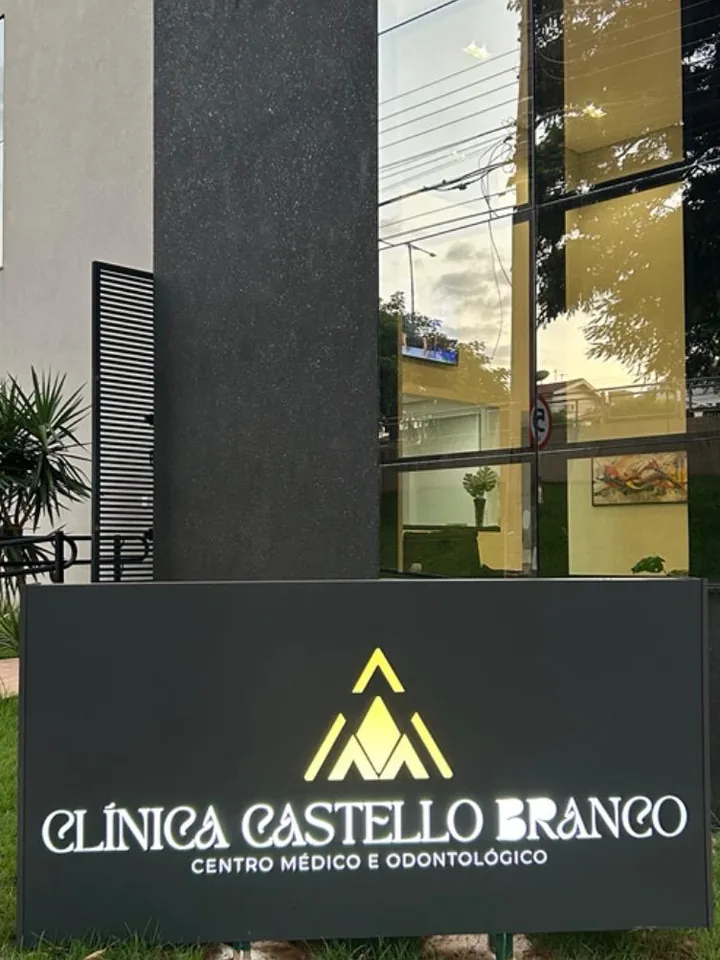
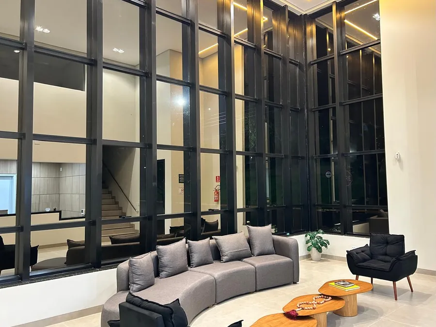

Ginecologia
Consultas de rotina e prevenção, coleta de preventivo, orientação contraceptiva, investigação de sintomas ginecológicos, saúde sexual e acompanhamento do climatério.
Agendar consulta ginecológicaGinecologia e Obstetrícia · Campo Grande, MS
Consultas construídas a partir da escuta — sobre o corpo, a rotina e o que você precisa perguntar sem pressa.
Sobre mim
Formada em medicina pela Universidade Federal do Rio de Janeiro, desenvolveu sua carreira em muitos municípios do país.
Retornou para Campo Grande, especializando-se em Ginecologia e Obstetrícia com residência médica pelo HUMAP-UFMS, onde também trabalha atualmente.
Há anos mantém sua rotina de estudos, para levar atendimento com atualização e competência. Atenta ao universo feminino, oferece acompanhamento humanizado e atualizado para todas as fases da mulher.
Priorize-se e marque sua consulta.
Todas as fases
A mulher não é a mesma aos 15, aos 30 e aos 55 — e o acompanhamento também precisa ser diferenciado. Role para ver cada fase abrir.
A primeira consulta não precisa obrigatoriamente ter exame. É conversa: como é o ciclo, o que é normal, o que merece atenção, vacinação e as dúvidas que ninguém respondeu ainda. O contato com o consultório começa aqui, sem susto.
Rotina ginecológica, coleta de preventivo, teste de DNA-HPV, escolha e ajuste de método contraceptivo, saúde sexual, cólicas e alterações do ciclo. É a fase mais longa — e a que mais se beneficia de acompanhamento contínuo.
Pré-natal do começo ao fim, com exames no tempo certo, ajuste de vitaminas e vacinas, e espaço para falar de parto, medo e expectativa. Você sai de cada consulta sabendo o que vem na próxima.
O puerpério é uma fase por si só. Recuperação, amamentação, contracepção depois do parto, sono e humor entram na consulta com o mesmo peso do resto — porque é o que mais aparece e o que menos se pergunta.
Sintomas, saúde óssea, sono, libido e as decisões sobre terapia hormonal, discutidas com evidência e com o que faz sentido para a sua vida. A última pétala é a que fica aberta por mais tempo.
Especialidades
Consultas de rotina e prevenção, coleta de preventivo, orientação contraceptiva, investigação de sintomas ginecológicos, saúde sexual e acompanhamento do climatério.
Agendar consulta ginecológicaPré-natal completo, acompanhamento da gestação de início ao fim, orientação sobre parto e cuidados do puerpério, com retorno programado a cada etapa.
Agendar pré-natalO que ofereço
Cada procedimento explicado — para você chegar à consulta sabendo o que esperar.
Primeira consulta ou retorno: tempo para ouvir sua queixa, examinar e explicar os próximos passos.
O acompanhamento anual da saúde da mulher, com exame preventivo e orientação.
Solicitação e leitura dos exames de rotina — preventivo, laboratoriais e de imagem.
Escolha do método que combina com o seu corpo e a sua rotina, com explicação de cada opção.
Métodos contraceptivos de longa duração — DIU hormonal ou de cobre e o implante subcutâneo, colocados em consultório com orientação antes e depois.
Acompanhamento da gestação do começo ao fim e o retorno depois do parto — para a mãe, não só para o bebê.
Reposição e ajuste hormonal conduzidos caso a caso, do climatério a outras indicações.
Espaço para falar de desejo, dor, prevenção e o que mais incomodar — uma vida sexual ativa e saudável, com escuta humanizada e sem constrangimento.
A consulta
Consultas personalizadas, construídas através da escuta da mulher sobre todas as suas demandas — físicas, sociais e mentais.
Atualização constante e compromisso com a ciência baseada em evidências, unindo competência técnica e sensibilidade — para que cada consulta seja um espaço de confiança, informação e bem-estar.
O que trazer, o que esperar e o que acontece depois. Abra a que for a sua.
Seja bem-vinda. O objetivo é um atendimento humanizado, respeitoso e cuidadoso, para que você se sinta segura e à vontade durante todo o processo.
O atendimento é pautado no respeito, sigilo, empatia e autonomia da mulher. Nosso espaço é livre de julgamentos — aqui, você é acolhida integralmente.
Que bom ter você aqui. Este é um momento muito especial, e queremos que você se sinta acolhida, segura e bem informada em cada etapa.
O compromisso é oferecer um pré-natal humanizado, seguro e acolhedor, respeitando suas escolhas em cada etapa.
O preventivo (Papanicolau) é um exame de rotina, rápido, feito na própria consulta. Ele rastreia alterações no colo do útero antes de qualquer sintoma aparecer — por isso ele é feito mesmo quando está tudo bem.
Estas são orientações gerais. A conduta é sempre individual e definida na consulta.
O consultório
O atendimento acontece na Clínica Castello Branco, na Avenida Noroeste. A estrutura foi planejada para oferecer conforto, acolhimento e privacidade em cada detalhe, com o que é preciso para atendimentos em ginecologia e obstetrícia com segurança e tranquilidade.
Cada paciente é recebida com atenção e cuidado, num ambiente que prioriza o bem-estar e o respeito em todas as etapas do atendimento.
Conhecer a Clínica Castello Branco

Agende sua consulta
O agendamento é feito pelo WhatsApp da clínica. Se preferir, mande a sua dúvida antes — dá para saber pela conversa se o que você precisa é uma consulta de rotina ou um retorno.